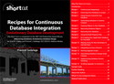

DevOps for DBA
DevOps practices have changed the way development and operations and system admin teams interact
One definition of DevOps is that
DevOps is a cross-disciplinary community of practice dedicated to the study of building, evolving and operating rapidly-changing resilient systems at scale.In other words DevOps is improved collaboration between Software Development, QA, IT Operations and services. DevOps helps an organization towards their path to enable Continuous Delivery
DevOps practices for DBA and Data Team focus on the Tools, practices and techniques that are useful for the Data team to use for Development activities, Testing setup and execution, Collaboration techniques and Deployment tools and techniques. The aim of this site is to further the practice and help the DBA's and Data team to use these practices to become productive and become part of the delivery team and embrace the devops movement.
Development Practices
Practices that the DBA can use during development activities. Practices such as
Testing practices
Practices that the DBA can use during testing activities. Testing of the database components as well as supporting the team and business during application testing
Collaboration Practices
Many times DBA is part of a central team and are assigned to project teams in time slices and it becomes hard for the development team to collaborate with the DBA and vice versa. These practices help the DBA and the team collaborate
Deployment Practices
During deployment, automating the deployment process, just like how the application is automated, enables the team to not be dependent. These practices also help the team to adapt easily to changing frequencies of software release cycles. Some of the practices are
Related content
Refactoring Databases: Evolutionary Database Design: Refactoring has proven its value in a wide range of development projects—helping software professionals improve system designs, maintainability, extensibility, and performance. Refactoring Databases introduces powerful refactoring techniques specifically designed for database systems. It demonstrates how small changes to table structures, data, stored procedures, and triggers can significantly enhance virtually any database design without changing semantics. How to evolve database schemas in step with source code and become far more effective in projects relying on iterative, agile methodologies.
Recipes for Continuous Database Integration: Continuous Integration changed the way software is written. Why not extend and make the database part of the same Continuous Integration cycle so that you can see integrated results of your application as well as your database?
Related Tools
Here are some of the open source as well as commercial tools, that enable DevOps for databases
Contact
This site is maintained by Pramod Sadalage. Pramod Sadalage is principal consultant at ThoughtWorks where he enjoys the rare role of bridging the divide between database professionals and application developers. He is usually sent in to clients with particularly challenging data needs, which require new technologies and techniques. In the early 00’s he developed techniques to allow relational databases to be designed in an evolutionary manner based on version-controlled schema migrations. He is the co-author of Refactoring Databases, co-author of NoSQL Distilled, author of Recipes for Continuous Database Integration and continues to speak and write about the insights he and his clients learn.